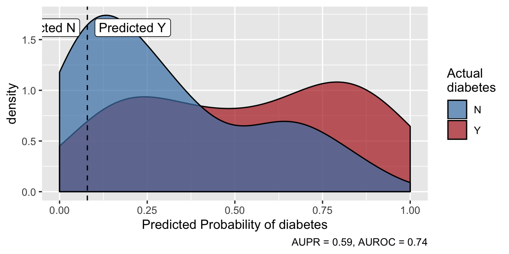

Get predictions
predict.model_list.RdMake predictions using the best-performing model. For
classification models, predicted probabilities are always returned, and you
can get either predicted outcome class by specifying outcome_groups
or risk groups by specifying risk_groups.
# S3 method for model_list predict(object, newdata, risk_groups = NULL, outcome_groups = NULL, prepdata, write_log = FALSE, ...)
Arguments
| object | model_list object, as from `tune_models` |
|---|---|
| newdata | data on which to make predictions. If missing, out-of-fold predictions from training will be returned If you want new predictions on training data using the final model, pass the training data to this argument, but know that you're getting over-fit predictions that very likely overestimate model performance relative to what will be achieved on new data. Should have the same structure as the input to `prep_data`,`tune_models` or `train_models`. `predict` will try to figure out if the data need to be sent through `prep_data` before making predictions; this can be overridden by setting `prepdata = FALSE`, but this should rarely be needed. |
| risk_groups | Should predictions be grouped into risk groups and
returned in column "predicted_group"? If this is NULL (default), they will
not be. If this is a single number, that number of groups will be created
with names "risk_group1", "risk_group2", etc. "risk_group1" is always the
highest risk (highest predicted probability). The groups will have equal
expected sizes, based on the distribution of out-of-fold predictions on the
training data. If this is a character vector, its entries will be used as
the names of the risk groups, in increasing order of risk, again with equal
expected sizes of groups. If you want unequal-size groups, this can be a
named numeric vector, where the names will be the names of the risk groups,
in increasing order of risk, and the entries will be the relative
proportion of observations in the group, again based on the distribution of
out-of-fold predictions on the training data. For example,
|
| outcome_groups | Should predictions be grouped into outcome classes and
returned in column "predicted_group"? If this is NULL (default), they will
not be. The threshold for splitting outcome classes is determined on the
training data via |
| prepdata | Defunct. Data are always prepped in prediction. |
| write_log | Write prediction metadata to a file? Default is FALSE. If
TRUE, will create or append a file called "prediction_log.txt" in the
current directory with metadata about predictions. If a character, is the
name of a file to create or append with prediction metadata. If you want a
unique log file each time predictions are made, use something like
|
| ... | Unused. |
Value
A tibble data frame: newdata with an additional column for the
predictions in "predicted_TARGET" where TARGET is the name of the variable
being predicted. If classification, the new column will contain predicted
probabilities. The tibble will have child class "predicted_df" and
attribute "model_info" that contains information about the model used to
make predictions. You can call plot or evaluate on a
predicted_df. If write_log is TRUE and this function errors, a
zero-row dataframe will be returned.
Returned data will contain an attribute, "prediction_log" that contains a
tibble of logging info for writing to database. If write_log is
TRUE and predict errors, an empty dataframe with the "prediction_log"
attribute will still be returned. Extract this attribute using
attr(pred, "prediction_log").
Data will also contain a "failed" attribute to easily filter for errors
after prediction. Extract using attr(pred, "failed").
Details
The model and hyperparameter values with the best out-of-fold performance in model training according to the selected metric is used to make predictions. Prepping data inside `predict` has the advantage of returning your predictions with the newdata in its original format.
If write_log is TRUE and an error is encountered, predict
will not stop. It will return the error message as: - A warning in the
console - A field in the log file - A column in the "prediction_log"
attribute - A zero-row data frame will be returned
See also
Examples
### Data prep and model training ### #################################### set.seed(7510) # Split the first 200 rows in pima_diabetes into a model-training dataset # containing 3/4 of the data and a test dataset containing 1/4 of the data. d <- split_train_test(pima_diabetes[1:200, ], diabetes, .75) # Prep the training data for model training and train regularized regression # and extreme gradient boosted models models <- d$train %>% prep_data(patient_id, outcome = diabetes) %>% flash_models(outcome = diabetes, models = c("glm", "xgb"))#>#>#> #>#> #> #>#>#>#> #> #>### Making predictions ### ########################## # Make prediction on test data using the model that performed best in # cross validation during model training. Before predictions are made, the test # data is automatically prepared the same way the training data was. predictions <- predict(models, newdata = d$test)#>predictions#> #>#> # A tibble: 49 x 11 #> diabetes predicted_diabe… patient_id pregnancies plasma_glucose diastolic_bp #> * <fct> <dbl> <int> <int> <int> <int> #> 1 N 0.0510 2 1 85 66 #> 2 N 0.163 6 5 116 74 #> 3 Y 0.165 7 3 78 50 #> 4 N 0.530 8 10 115 NA #> 5 N 0.191 19 1 103 30 #> 6 N 0.395 22 8 99 84 #> 7 Y 0.702 27 7 147 76 #> 8 N 0.797 41 3 180 64 #> 9 Y 0.815 44 9 171 110 #> 10 N 0.0405 53 5 88 66 #> # ... with 39 more rows, and 5 more variables: skinfold <int>, insulin <int>, #> # weight_class <chr>, pedigree <dbl>, age <int>evaluate(predictions)#> AUPR AUROC #> 0.6389405 0.7795699plot(predictions)### Outcome class predictions ### ################################# # If you want class predictions in addition to predicted probabilities for # a classification model, specify outcome_groups. The number passed to # outcome groups is the cost of a false negative relative to a false positive. # This example specifies that one missed detection is as bad as ten false # alarms, and the resulting confusion matrix reflects this preference. class_preds <- predict(models, newdata = d$test, outcome_groups = 10)#>table(actual = class_preds$diabetes, predicted = class_preds$predicted_group)#> predicted #> actual N Y #> N 10 21 #> Y 1 17# You can extract the threshold used to separate predicted Y from predicted N get_cutoffs(class_preds)#># And you can visualize that cutoff by simply plotting the predictions plot(class_preds)### Risk stratification ### ########################### # Alternatively, you can stratify observations into risk groups by specifying # the risk_groups parameter. For example, this creates five risk groups # with custom names. Risk group assignment is based on the distribution of # predicted probabilities in model training. This is useful because it preserves # a consistent notion of risk; for example, if you make daily predictions and # one day happens to contain only low-risk patients, those patients will all # be classified as low risk. Over the long run, group sizes will be consistent, # but in any given round of predictions they may differ. If you want fixed # group sizes, see the following examples. predict(models, d$test, risk_groups = c("very low", "low", "medium", "high", "very high")) %>% plot()#>### Fixed size groups ### ######################### # If you want groups of fixed sizes, e.g. say you have capacity to admit the three # highest-risk patients, treat the next five, and have to discharge the remainder, # you can use predicted probabilities to do that. One way to do that is to # arrange the predictions data frame in descending order of risk, and then use the # row numbers to stratify patients library(dplyr) predict(models, d$test) %>% arrange(desc(predicted_diabetes)) %>% mutate(action = case_when( row_number() <= 3 ~ "admit", row_number() <= 8 ~ "treat", TRUE ~ "discharge" )) %>% select(predicted_diabetes, action, everything())#>#> # A tibble: 49 x 12 #> predicted_diabe… action diabetes patient_id pregnancies plasma_glucose #> <dbl> <chr> <fct> <int> <int> <int> #> 1 0.918 admit Y 186 7 194 #> 2 0.815 admit Y 44 9 171 #> 3 0.798 admit Y 115 7 160 #> 4 0.797 treat N 41 3 180 #> 5 0.778 treat Y 193 7 159 #> 6 0.702 treat Y 27 7 147 #> 7 0.682 treat N 145 4 154 #> 8 0.648 treat Y 132 9 122 #> 9 0.635 disch… Y 190 5 139 #> 10 0.634 disch… N 87 13 106 #> # ... with 39 more rows, and 6 more variables: diastolic_bp <int>, #> # skinfold <int>, insulin <int>, weight_class <chr>, pedigree <dbl>, #> # age <int># Finally, if you want a fixed group size that is further down on the risk # scale, you can achieve that with a combination of risk groups and the # stratifying approach in the last example. For example, say you have capacity # to admit 5 patients, but you don't want to admit patients in the top 10% of # risk scores. predict(models, d$test, risk_groups = c("risk acceptable" = 90, "risk too high" = 10)) %>% filter(predicted_group == "risk acceptable") %>% top_n(n = 5, wt = predicted_diabetes)#>#> # A tibble: 5 x 12 #> diabetes predicted_diabe… predicted_group patient_id pregnancies #> <fct> <dbl> <fct> <int> <int> #> 1 Y 0.702 risk acceptable 27 7 #> 2 Y 0.648 risk acceptable 132 9 #> 3 N 0.682 risk acceptable 145 4 #> 4 Y 0.635 risk acceptable 190 5 #> 5 Y 0.778 risk acceptable 193 7 #> # ... with 7 more variables: plasma_glucose <int>, diastolic_bp <int>, #> # skinfold <int>, insulin <int>, weight_class <chr>, pedigree <dbl>, #> # age <int>